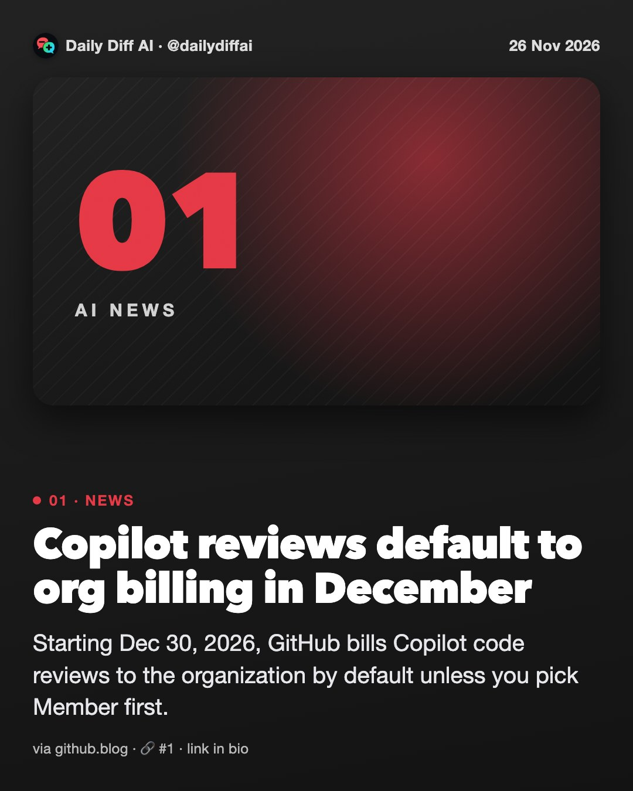
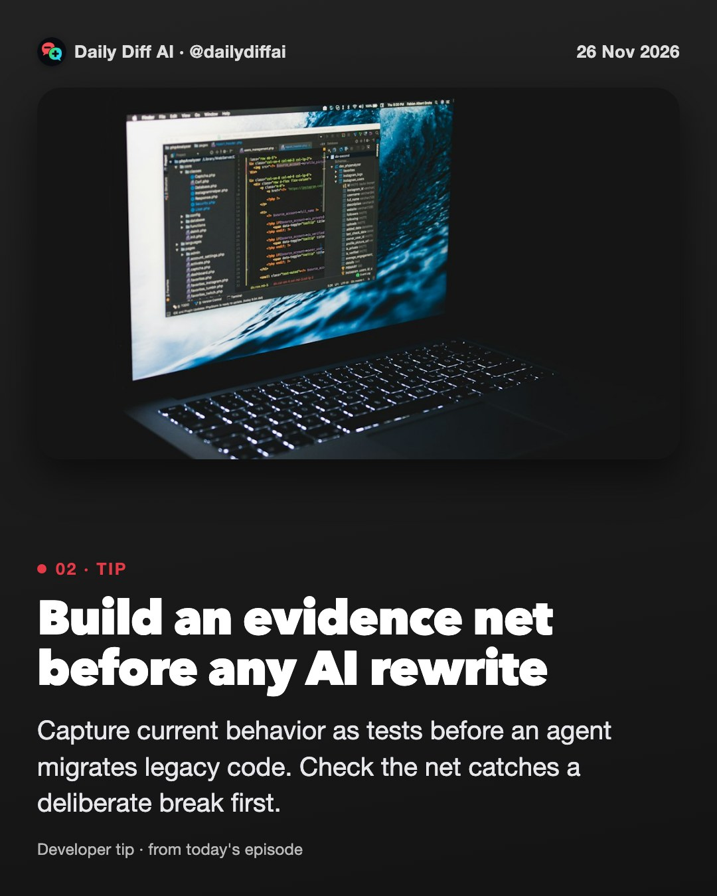
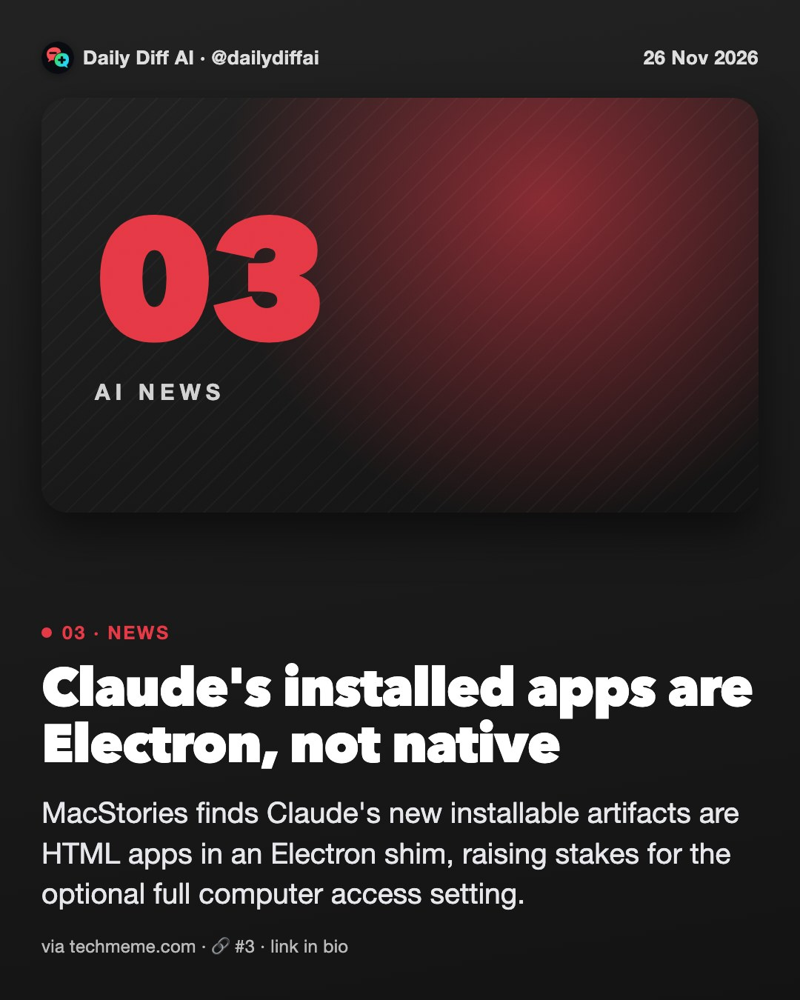
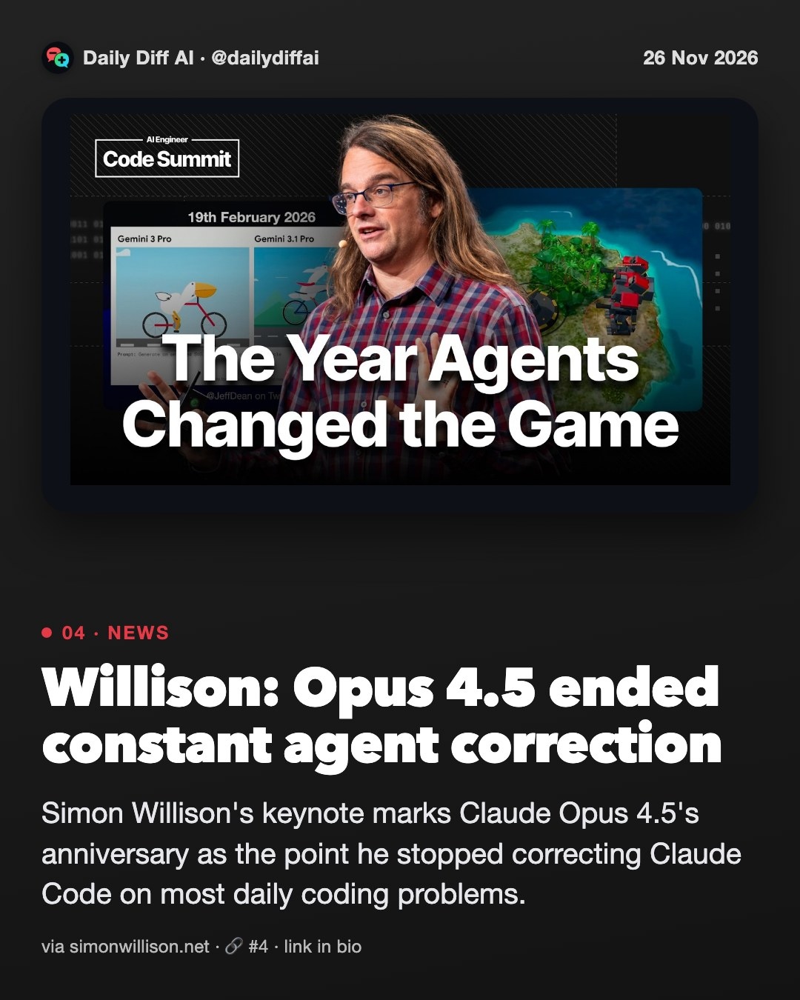
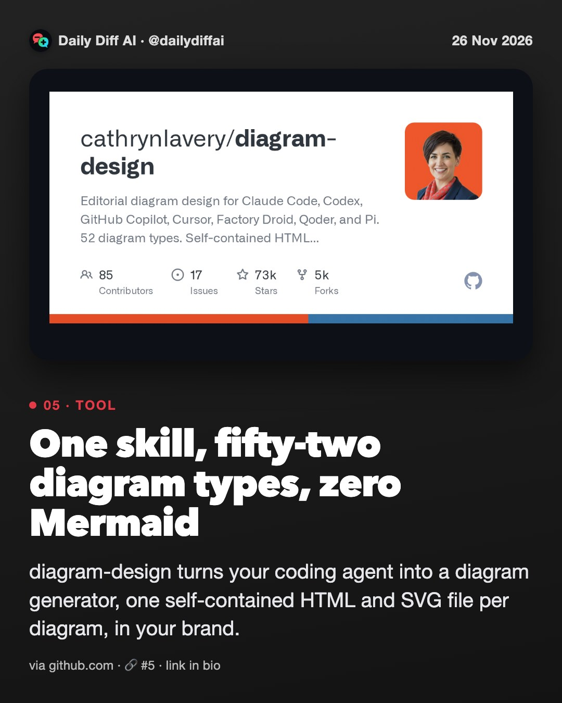
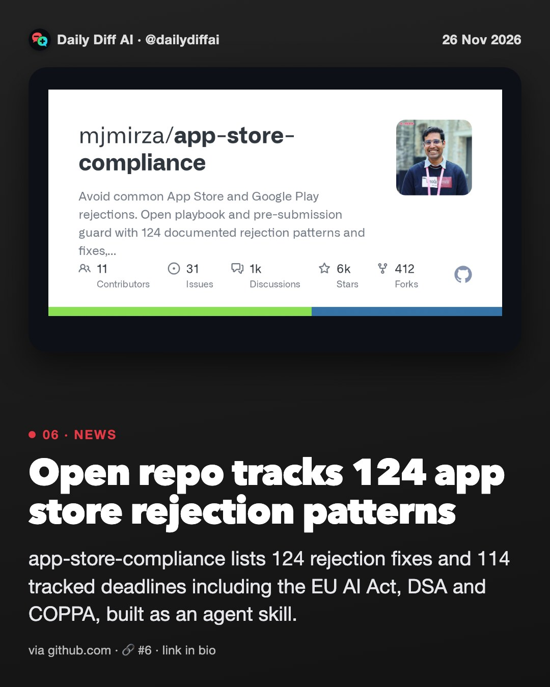
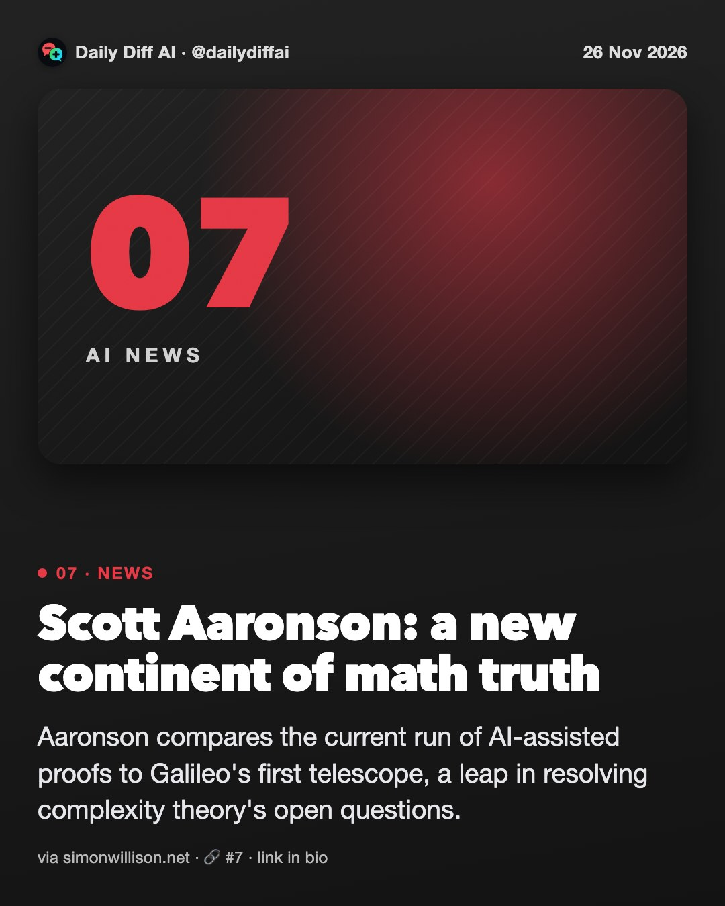

Daily Diff AI

Copilot reviews default to org billing in December
Starting Dec 30, 2026, GitHub bills Copilot code reviews to the organization by default unless you pick Member first.
Read on github.blog →
Build an evidence net before any AI rewrite
Capture current behavior as tests before an agent migrates legacy code. Check the net catches a deliberate break first.

Claude's installed apps are Electron, not native
MacStories finds Claude's new installable artifacts are HTML apps in an Electron shim, raising stakes for the optional full computer access setting.
Read on techmeme.com →
Willison: Opus 4.5 ended constant agent correction
Simon Willison's keynote marks Claude Opus 4.5's anniversary as the point he stopped correcting Claude Code on most daily coding problems.
Read on simonwillison.net →
One skill, fifty-two diagram types, zero Mermaid
diagram-design turns your coding agent into a diagram generator, one self-contained HTML and SVG file per diagram, in your brand.
Read on github.com →
Open repo tracks 124 app store rejection patterns
app-store-compliance lists 124 rejection fixes and 114 tracked deadlines including the EU AI Act, DSA and COPPA, built as an agent skill.
Read on github.com →
Scott Aaronson: a new continent of math truth
Aaronson compares the current run of AI-assisted proofs to Galileo's first telescope, a leap in resolving complexity theory's open questions.
Read on simonwillison.net →